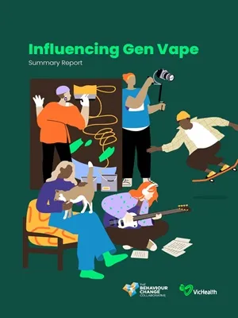
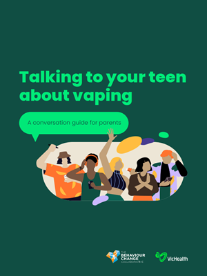
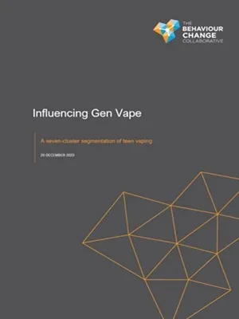
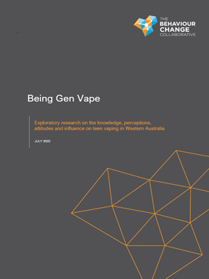
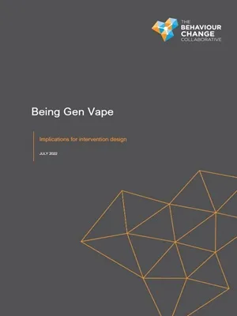

Resources
Featured Content - Teen Vaping
Over the past two years we’ve invested considerably into exploratory attitudinal and behavioural research on teen vaping. With the generous support of Healthway and more recently VicHealth, we have generated actionable reports, resources and insights that are being used by government, health agencies, schools, community organisations, sporting clubs and others to develop campaigns and programs to address teen vaping. Our work is deeply rooted in the lived experience of children and teens and designed to provide stakeholders with practical, evidence-informed guidance on effective communications and multi-lever intervention design.

Title: Talking to your teen about vaping: A conversation guide for parents
Topic: Vaping
Category: Public health. Health promotion.
Publication date: February 2024
Authors: van Bueren, D, van der Beeke, L, Grainger, A.
Funded by: VicHealth
Download Now

Title: Influencing Gen Vape – Summary report
Topic: Vaping
Category: Public health. Health promotion.
Publication date: February 2024
Authors: The Behaviour Change Collaborative
Funded by: VicHealth
Download Now

Title: Influencing Gen Vape – A seven-cluster segmentation on teen vaping (full technical report)
Topic: Vaping
Category: Public health. Health promotion.
Publication date: December 2023
Authors: The Behaviour Change Collaborative
Funded by: VicHealth
RESTRICTED RELEASE: Please complete Resource Request form below.

Title: Being Gen Vape – Exploratory research on the knowledge, perceptions, attitudes and influences on teen vaping in Western Australia
Topic: Vaping
Category: Public health. Health promotion.
Publication date: July 2022
Authors: The Behaviour Change Collaborative
Funded by: Healthway WA
Download Now

Title: Being Gen Vape – Implications for intervention design
Topic: Vaping
Category:Public health. Health promotion.
Publication date:July 2022
Authors: The Behaviour Change Collaborative
Funded by: Healthway WA
RESTRICTED RELEASE: Please complete Resource Request form below.